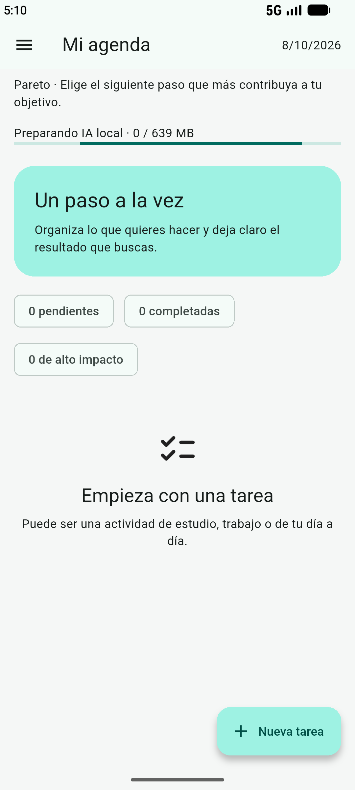

Agenda enfocada
La vista principal separa el historial, las actividades de hoy y la planificación futura. Las tareas completadas permanecen visibles durante el día y pasan al historial cuando cambia la fecha.
ANDROID · WINDOWS · USO LOCAL
Organiza tu tiempo. Equilibra tus finanzas.
Validación local en cursoUna aplicación para planificar compromisos, llevar el control manual de ingresos y gastos y recibir acompañamiento para avanzar paso a paso.
VISTA DE LA APLICACIÓN

FUNCIONALIDADES
La vista principal separa el historial, las actividades de hoy y la planificación futura. Las tareas completadas permanecen visibles durante el día y pasan al historial cuando cambia la fecha.
Programa una actividad en varios días de la semana hasta una fecha final. Al editar o eliminar una serie puedes elegir si afecta solo a esa fecha o también a sus actividades futuras.
Consulta el mes, los siete días de la semana o el día en una distribución Gantt de 24 horas. La vista de hoy se posiciona alrededor de la hora actual; las otras fechas se recorren manualmente.
Registra ingresos y gastos, revisa compromisos recurrentes, créditos, cuentas por cobrar, presupuestos y ahorros. Los resúmenes corresponden al período elegido y la IA no mueve dinero.
Registra aportes y retiros manualmente. El saldo ahorrado se consulta aparte del dinero de uso diario, para distinguir el fondo reservado del efectivo disponible.
Elige entre cuatro temas: claro, oscuro, azul claro y rosa. Las pantallas se adaptan al ancho del teléfono o la computadora.
ACOMPAÑAMIENTO LOCAL
Un modelo Qwen se ejecuta en el dispositivo mediante llama.cpp. Puede proponer pasos pequeños para una actividad extensa y generar frases de motivación, reflexiones y sugerencias financieras según el contexto disponible.
Las tareas, pagos y movimientos siguen reglas explícitas de la aplicación y requieren acciones del usuario. Una sugerencia no completa una tarea ni registra una transacción.
PRIVACIDAD Y ALCANCE
TECNOLOGÍAS
Flutter y Dart para Android y Windows. llama.cpp ejecuta localmente el modelo Qwen que acompaña algunas funciones de organización y orientación.
DISPONIBILIDAD
Las pruebas de uso y rendimiento continúan. Todavía no se ofrecen instaladores ni una versión pública. La guía permite conocer el flujo previsto de la aplicación; las capturas adicionales y las descargas se añadirán cuando se apruebe una versión lista para distribuir.